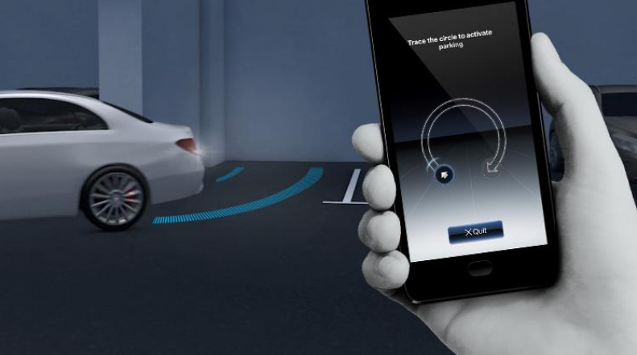
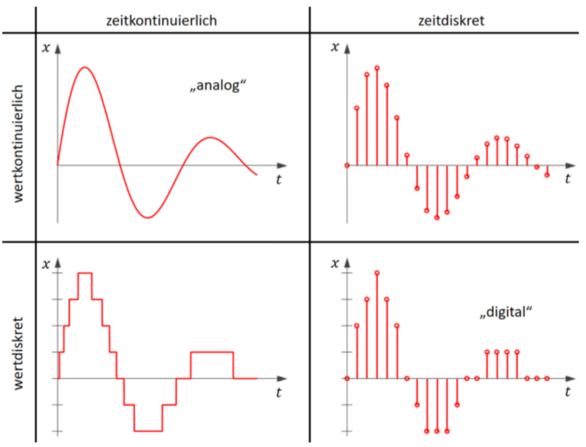
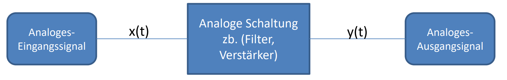
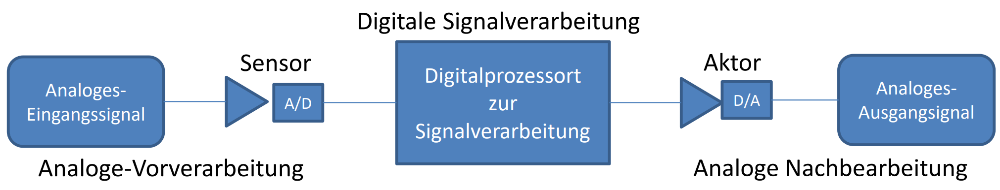
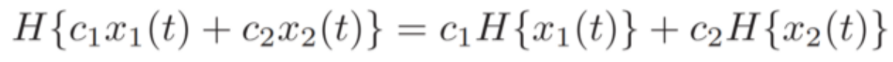
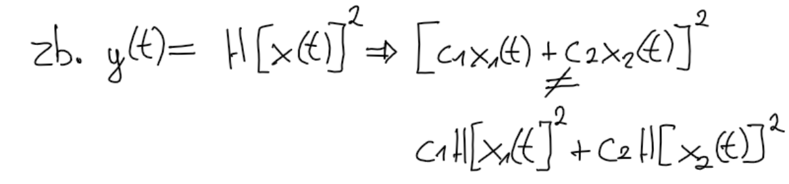
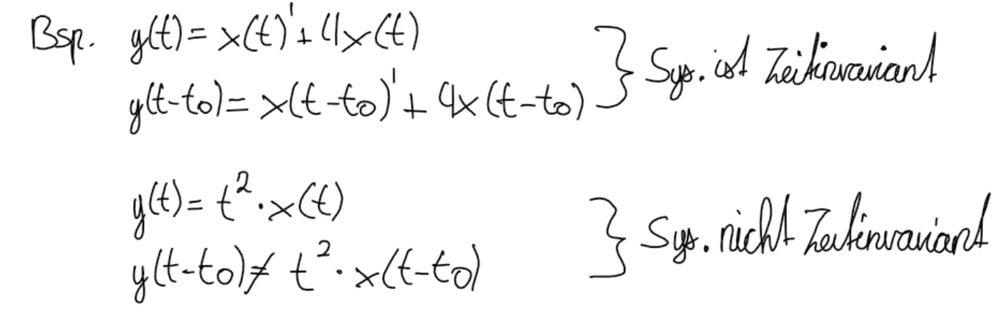
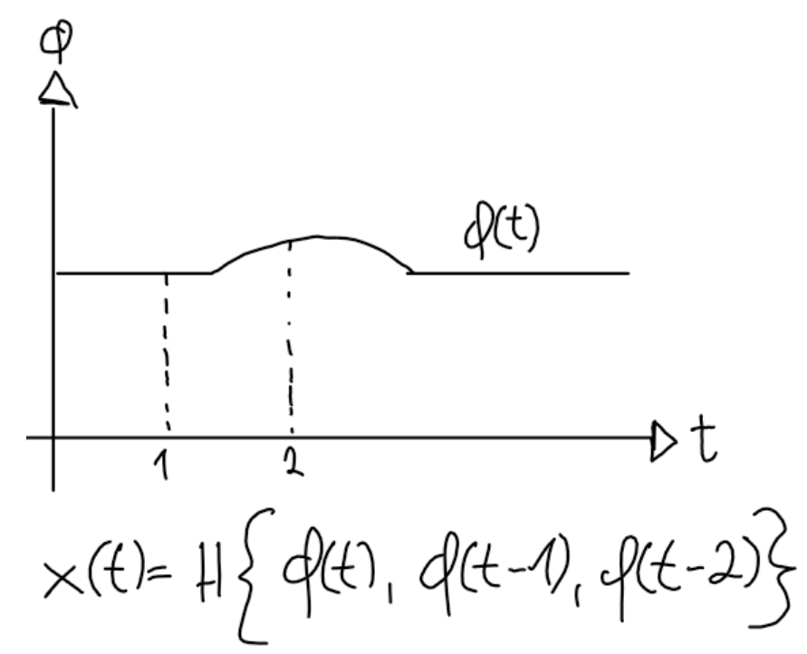

19. DSV Vorlesung 1#
19.1. Foliensatz 01#
Einführung in DSV
19.2. Gruppe E#
J.Duchscherer T.Straub
19.2.1. Motivation: Remote Park#
Einparken mit App |
Einparken in Garage |
|---|---|
 |
|

Wie kann nun eingeparkt werden?
Sensor und Aktor an der Lenkstange um die Ausrichtung der Räder zu kontrollieren.
Entfernungssensorik um die Umgebung zu erfassen z.B. Kamera, Lidar, Ultraschall
Aktor um den Drosselklappenwinkel zu verstellen (bei Verbrennermotoren um zu beschleunigen) bzw. Elektromotor an den Rädern ansteuern (bei E-Autos und Hybrid)
Aktor an der Bremsanlage um das Fahrzeug zu bremsen
Sensor und Aktor im Getriebe um zwischen vorwärts und rückwärts zu wechseln
19.2.2. Grundlegendes#
19.2.2.1. Was ist ein Signal#
Träger von Informationen Liegt in Form von mathematischer Funktion (einer, mehreren unabhängigen Variable/Variablen vor) Bsp. U(t), I(x,y) p(x,y,t)
19.2.2.2. Signaleigenschaften#
1. KontinuierlichBeliebig viele Werte zb. Zeitkontinuierlich t→∞ 2. Diskret Nur bestimmte Werte (meistens aus 1. durch Abtastung gewonnen) zb. Schlafzyklus, Temperatur zu bestimmten Zeitpunkten 3. Periodisch Sich im festen Abstand (T=Periodendauer) wiederholendes Signal zb. Ungedämpfte Schwingung (Federschwinger) 4. Aperiodisch Nicht Periodisch 5. Deterministisch Nicht zufälliger sondern funktionaler (von Wert1 auf Wert2 schließen) Zusammenhang zwischen Signal/Variablen zb. Sinus, Rechtecksignal (x(t) vollständig bekannt) 6. Stochastisch Zufälliger Zusammenhangzwischen Signal/Variablen zb. Rauschen, Sprachsignal (x(t) nicht oder nicht vollständig bekannt) Wichtig (Signaldimension ist abhängig von Variablenanzahl) 7. Eindimensional zb. Audiosignal p(t) 8. Mehrdimensional zb. Dreidimensional Video I(x, y, t) Signalart Analoges/Digitales-Signal

19.2.3. Was ist digitale Signalverarbeitung#
Verarbeitung von Signalen mit digitalen Sys. (Kombination von Software Realisierung der Signalverarbeitung und Hardware auf welcher diese Umgesetzt)
19.2.4. Grundlegende Signalverarbeitungsketten#
19.2.4.1. Analog#
z.B. Trennung von Nutzsignal und Rauschen durch Tiefpass-Filterung

Realisierungsmöglichkeiten: Schaltung aus Wiederständen, Kondensatoren…
19.2.4.2. Digital#
z.B. Wandlung eines analogen Bremssignals welches digital verarbeitet werden soll

Realisierungsmöglichkeiten: z.B. Allzweck Rechner, Mikroprozessoren, DSP(Digitale Signal Prozessoren) und Spezialschaltungen
19.2.5. Signalbeschreibung#
System ist:
1. Black-Box: Kenne Funktion des Systems aber nicht dessen Umsetzung 𝑦 (𝑡) = 𝐻{𝑥(𝑡) } 2. White-Box: Kenne Funktion des Systems und kann dessen Umsetzung(Komponenten, Verschaltung und Programmierung) einsehen 𝑦[𝑛] = 𝐻{𝑥[𝑛]} 3. Linear: System muss Additivität und Homogenität erfüllen

4. Nicht Linear:

5. Zeitinvariant: Zeitverschiebung (Eingang) → gleiche Verschiebung (Ausgang)

6. Gedächtnislos: Ausgangssignal hängt nur von dem Eingangssignal zu t0 ab (nur Zeitpunkt t=t0 keine Vergangenheit t-1) zb. y(t) = x(t) 7. Dynamisch: Ausgangssignal hängt nicht nur von dem Eingangssignal zu t0 sondern auch t ≠ t0 ab zb. y(t) = x(t-1)

8. Kausal: Ausgangssignal hängt nur von x(t) zu t ≤ t0 (nur von dem aktuellen oder vergangenen Eingang) ab zb. y[n] = x[n-1] oder x[n] 9. Nicht-Kausal: Wenn es nicht Kausal ist (auch von dem zukünftigen Eingang abhängig) zb. y[n] = x[n+1] 10. Stabil: Wenn beschränktes Eingangssignal zu beschränktem Ausgangssignal führt

11. Instabil: Wenn beschränktes Eingangssignal zu nicht beschränktem Ausgangssignal führt